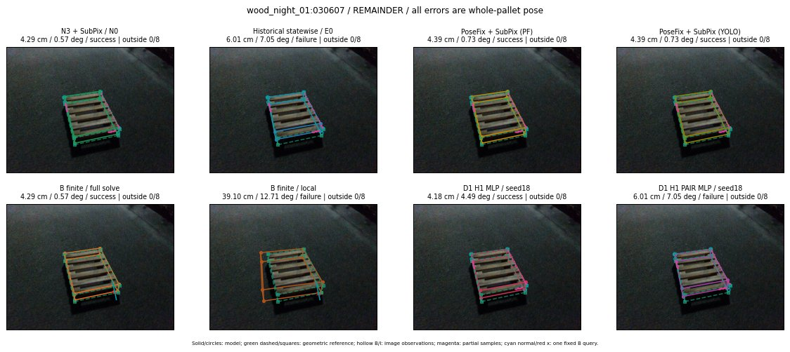
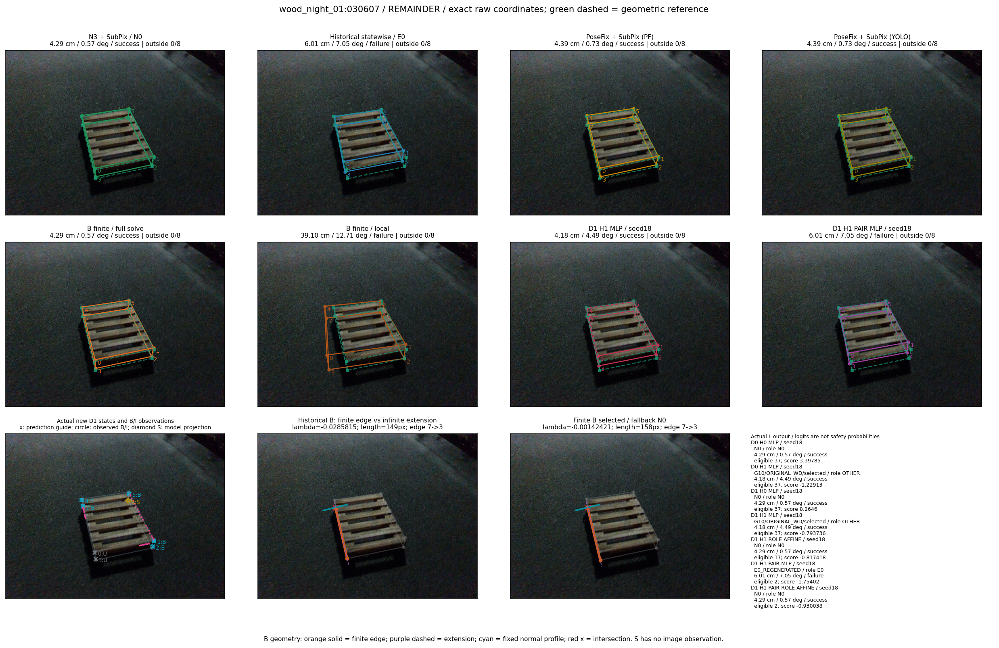

Whole-pallet pose errors; reference is a fixed geometric annotation, not certified physical GT.


Scores are uncalibrated logits. N0 retention is a numerical pose alias; it differs from H0 none or B fallback. B/I and profiles in baseline/B panels are original observations; L panels use new D1 observations. Only one deterministic supported B query is shown in a thumbnail; full support counts are below. Grey privacy rectangles edit the display copy only and are unrelated to O states; all observations were measured on original pixels. Thumbnails use JPEG quality85; detailed scientific panels are PNG.
| Method | Whole pose / cm, deg | Actual source | Selected ID | Score | Archived candidates | Eligible | N0 retained | H0 none | Fallback | Finite profiles |
|---|---|---|---|---|---|---|---|---|---|---|
| Raw YOLO + F | 6.01 cm / 3.01 deg / failure | OTHER | None | N/A | N/A | N/A | False | N/A | None | N/A |
| N3 + SubPix / N0 | 4.29 cm / 0.57 deg / success | N0 | None | N/A | N/A | N/A | True | N/A | None | N/A |
| Historical statewise / E0 | 6.01 cm / 7.05 deg / failure | E0_REGENERATED | None | N/A | N/A | N/A | False | N/A | False | N/A |
| PoseFix raw | 5.92 cm / 1.96 deg / failure | OTHER | None | N/A | N/A | N/A | False | N/A | None | N/A |
| PoseFix + SubPix (PF) | 4.39 cm / 0.73 deg / success | OTHER | None | N/A | N/A | N/A | False | N/A | False | historical support records 9; finite audit N/A |
| PoseFix + SubPix (YOLO) | 4.39 cm / 0.73 deg / success | OTHER | None | N/A | N/A | N/A | False | N/A | False | historical support records 9; finite audit N/A |
| Historical L, seed18 | 4.29 cm / 0.57 deg / success | N0 | N0 | N/A | 71 | 71 | True | True | True | N/A |
| Historical B fixed bank | 4.18 cm / 4.49 deg / success | OTHER | G10/ORIGINAL_WD/sample/0 | N/A | N/A | N/A | False | N/A | False | N/A |
| Historical B full | 5.67 cm / 2.74 deg / failure | OTHER | NEW/B/ORIGINAL_WD/h0/G13/ORIGINAL_WD/sample/0/PROPOSED_NATIVE_YAW_0 | N/A | N/A | N/A | False | N/A | False | N/A |
| Historical edge full | 37.49 cm / 6.99 deg / failure | OTHER | NEW/edge/ORIGINAL_WD/h0/G13/ORIGINAL_WD/sample/0/PROPOSED_NATIVE_YAW_0 | N/A | N/A | N/A | False | N/A | False | N/A |
| Historical AB full | 5.67 cm / 2.74 deg / failure | OTHER | NEW/AB/ORIGINAL_WD/h0/G13/ORIGINAL_WD/sample/0/PROPOSED_NATIVE_YAW_0 | N/A | N/A | N/A | False | N/A | False | N/A |
| B finite / fixed bank | 4.29 cm / 0.57 deg / success | N0 | N0 | N/A | N/A | N/A | True | N/A | True | N/A |
| B finite / full solve | 4.29 cm / 0.57 deg / success | N0 | N0 | N/A | N/A | N/A | True | N/A | True | N/A |
| B finite / local | 39.10 cm / 12.71 deg / failure | OTHER | NEW_FINITE/B/ORIGINAL_WD/h0/N0_LOCAL_SAME_PHYSICAL_POSE/ORIGINAL_WD | N/A | N/A | N/A | False | N/A | False | 33/33 |
| Edge finite / full solve | 4.29 cm / 0.57 deg / success | N0 | N0 | N/A | N/A | N/A | True | N/A | True | N/A |
| D0 H0 MLP / seed18 | 4.29 cm / 0.57 deg / success | N0 | N0 | 3.3978493213653564 | 37 | 37 | True | True | True | N/A |
| D0 H0 MLP / seed19 | 4.29 cm / 0.57 deg / success | N0 | N0 | 4.618693828582764 | 37 | 37 | True | True | True | N/A |
| D0 H0 MLP / seed20 | 4.29 cm / 0.57 deg / success | N0 | N0 | 0.76319420337677 | 37 | 37 | True | True | True | N/A |
| D0 H1 MLP / seed18 | 4.18 cm / 4.49 deg / success | OTHER | G10/ORIGINAL_WD/selected | -1.2291338443756104 | 37 | 37 | False | False | False | N/A |
| D0 H1 MLP / seed19 | 4.18 cm / 4.49 deg / success | OTHER | G10/ORIGINAL_WD/selected | -1.4503579139709473 | 37 | 37 | False | False | False | N/A |
| D0 H1 MLP / seed20 | 6.01 cm / 7.05 deg / failure | E0_REGENERATED | E0_REGENERATED | -2.4249112606048584 | 37 | 37 | False | False | False | N/A |
| D1 H0 MLP / seed18 | 4.29 cm / 0.57 deg / success | N0 | N0 | 8.264596939086914 | 37 | 37 | True | True | True | N/A |
| D1 H0 MLP / seed19 | 4.29 cm / 0.57 deg / success | N0 | N0 | 8.542677879333496 | 37 | 37 | True | True | True | N/A |
| D1 H0 MLP / seed20 | 4.29 cm / 0.57 deg / success | N0 | N0 | 8.250240325927734 | 37 | 37 | True | True | True | N/A |
| D1 H1 MLP / seed18 | 4.18 cm / 4.49 deg / success | OTHER | G10/ORIGINAL_WD/selected | -0.7937359809875488 | 37 | 37 | False | False | False | N/A |
| D1 H1 MLP / seed19 | 6.01 cm / 7.05 deg / failure | E0_REGENERATED | E0_REGENERATED | -0.9222135543823242 | 37 | 37 | False | False | False | N/A |
| D1 H1 MLP / seed20 | 4.18 cm / 4.49 deg / success | OTHER | G10/ORIGINAL_WD/selected | -1.4302006959915161 | 37 | 37 | False | False | False | N/A |
| D1 H1 ROLE AFFINE / seed18 | 4.29 cm / 0.57 deg / success | N0 | N0 | -0.8174182176589966 | 37 | 37 | True | False | False | N/A |
| D1 H1 ROLE AFFINE / seed19 | 4.29 cm / 0.57 deg / success | N0 | N0 | -0.29910382628440857 | 37 | 37 | True | False | False | N/A |
| D1 H1 ROLE AFFINE / seed20 | 4.29 cm / 0.57 deg / success | N0 | N0 | -0.5447525382041931 | 37 | 37 | True | False | False | N/A |
| D1 H1 PAIR MLP / seed18 | 6.01 cm / 7.05 deg / failure | E0_REGENERATED | E0_REGENERATED | -1.7540171146392822 | 37 | 2 | False | False | False | N/A |
| D1 H1 PAIR MLP / seed19 | 4.29 cm / 0.57 deg / success | N0 | N0 | -1.596511960029602 | 37 | 2 | True | False | False | N/A |
| D1 H1 PAIR MLP / seed20 | 4.29 cm / 0.57 deg / success | N0 | N0 | -1.7151516675949097 | 37 | 2 | True | False | False | N/A |
| D1 H1 PAIR ROLE AFFINE / seed18 | 4.29 cm / 0.57 deg / success | N0 | N0 | -0.9300375580787659 | 37 | 2 | True | False | False | N/A |
| D1 H1 PAIR ROLE AFFINE / seed19 | 4.29 cm / 0.57 deg / success | N0 | N0 | -1.087465524673462 | 37 | 2 | True | False | False | N/A |
| D1 H1 PAIR ROLE AFFINE / seed20 | 4.29 cm / 0.57 deg / success | N0 | N0 | -0.9270663261413574 | 37 | 2 | True | False | False | N/A |
| Regenerated common E0 | 6.01 cm / 7.05 deg / failure | E0_REGENERATED | E0_REGENERATED | N/A | N/A | N/A | False | N/A | False | N/A |